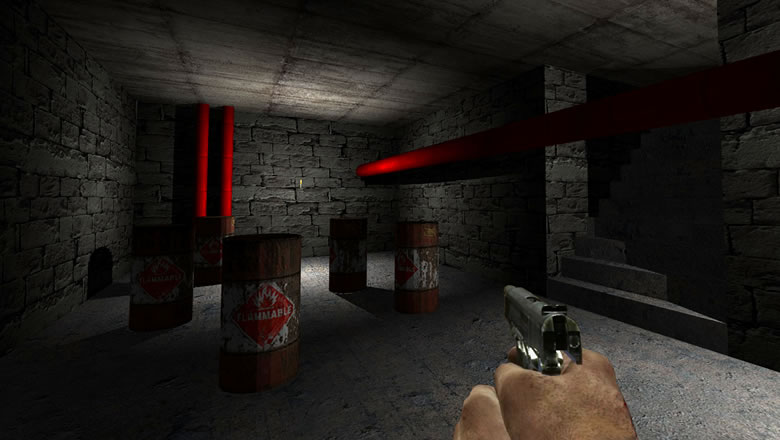

The state of CSS 3D transforms
By Keith Clark | | 3 Comments
If you follow me on twitter you’ll know I’ve been experimenting with CSS 3D transforms to see how far I can push them. A while back I wrote a very simple first person demo built using HTML, CSS3 and a splash of JavaScript. The 3D enviroment was constructed entirely from <div> elements that were positioned in 3D space using CSS transforms.
In my free time I’ve been evolving the idea to see if I could actually create a full 3D environment with lighting, shadows, collision etc. (I’ll be posting about the new version soon). So far, it’s going really well but pushing the boundaries of 3D transforms has revealed various bugs and inconstancies across all browsers so I thought I’d document them here.

Chrome
When it comes to rendering a large number of elements manipulated with 3D transforms Chrome does a great job. Of all the browsers I’ve been looking at Chrome is definitely the fastest at this.
The only major issue is the inconsistent rendering of elements as you transform them between repaints. Groups of elements are intermittent missed when the browser redraws the screen causing terrible flicker.
The second issue relates to -webkit-mask-image. On some machine configurations the mask image is incorrectly scaled to fit inside the viewport when using a 3D transform. The image that the mask is applied to is not scaled which produces an interesting side-effect.
The -webkit-mask-image problem appears to be a hardware accelerated graphics issue because it doesn’t happen on machines with older GPUs unless you force hardware acceleration via about:flags. I’ve filed a bug about this.
Safari
Safari is almost perfect. It’s pretty fast at rendering hundreds of elements using 3D transforms, there’s no flicker between frames and the whole experience is silky smooth. Sounds too good to be true…
Unfortunately, there is a problem. Safari doesn’t apply the Z value to the transform matrix when you use -webkit-transform-origin which makes moving a “camera” impossible unless you build up the transform matrix long hand. In my original prototype you could only move along the X and Z axis. There was no vertical movement so I switched the Z axis for the Y axis to get round this issue. For my new prototype I want stairs, jumping and falling so I need movement in all three axis.
I filed a bug for this issue which was eventually closed as duplicate of this better documented bug.
Firefox
Firefox suffers from similar rendering issues to Chrome, it’s also very slow. So slow that it chokes on even a few transformed elements. I suspect Firefox isn’t using the GPU to render 3D transforms – I’d like to get some clarification on this.
Internet Explorer
Oh dear. No support for transform-style: preserve-3d which means nested elements aren’t transformed. This makes the project a non starter for IE. It’s a real shame, but somehow, deep down I always knew this was never going to work in IE.
Summary
Although each browser has its own issues, generally they all do a great job of rendering transformed elements accurately (except for IE not supporting preserve-3d). So, provided you make modest use of 3D transforms, you’ll probably never encounter any of these issues.
3 comments
Without an FPS counter there is not much we can tell you if your demo performs better on our machines or not. I’ll point the Firefox team to it and see what might be the issue with HW acceleration.
I’ll add an FPS counter and re-test. Thanks Chris.
When it comes to CSS 3D transformations, while it is true that under OSX Lion Firefox was the slowest and Safari was the fastest browser, that is no longer the case in Mountain Lion. As weird as this may sound, now Firefox is the fastest and Safari is utter rubbish.
Brilliant article by the way, keep up the good work.